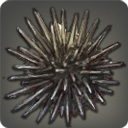

|
|
|
Cloud Coral |
| 120 Skies |   |
| A white lightweight coral found growing on the floating islands above Eorzea. |
This bone white cliff-dwelling coral withstands the constant battering of the Sea of Clouds' winds by hiding within a lightweight, yet remarkably sturdy exoskeleton, emerging to feed only when the weather permits. |
|
Ice Faerie |
| 120 Lakes | |
| A tiny “winged” slug commonly found in ice-ridden freshwater lakes. |
Despite its angelic appearance, this tiny transparent sea slug is a ferocious predator which uses a circle of razor-sharp teeth to slice up its prey as it swallows it whole. This furious display has resulted in a second name─Halone. |
|
Skyworm |
| 120 Skies | |
| A wingless worm that has somehow learned to fly. |
It is believed that this cylindrical vilekin can locate and devour wind-aspected aether in the Sea of Clouds, in turn, making the creature lighter than air. |
|
Coerthan Crab |
| 125 Lakes |   |
| A freshwater crustacean only found in the coldest of lakes. |
Once only found in the glacial lakes that pepper Abalathia's Spine, the everlasting winter currently overtaking Coerthas has drawn the crustaceans down from the mountains and into the highlands where they have fewer natural enemies. |
|
Fanged Clam |
| 125 Lakes | |
| When closed, the shells of this freshwater bivalve mollusk form a demonic rictus that will haunt your nightmares until the end of time. Possibly beyond. |
When closed tight, the thick shell of this freshwater mollusk creates an insulated sanctuary up to ten times warmer than the surrounding waters. Any fingers caught in the clenching maw of the fanged clam will not be returned to their owner. |
 |
Lake Urchin |
| 125 Lakes | |
| A freshwater urchin which survives by eating the sparse algal blooms in Twinpools. |
Coerthan legend tells of a brave priest who would rush into battle headlong with his copy of the Enchiridion in one hand and a morningstar in the other. So frenzied was his slashing and whirling of the weapon, that often the spiked ball would fly from its chain and into nearby rivers and lakes. Lake urchins have nothing to do with this legend. |
|
Whilom Catfish |
125 Rivers L (4)  | |
A small, red catfish native to the Whilom River.
[Suitable for display in aquariums tier 3 and higher.] |
This variety of warmwater catfish has scales of deep crimson which allow it to better conceal itself in the Whilom River's red clay bed. To hunt, it will sit unmoving until a smaller fish, unaware of the camouflaged wavekin's presence, comes along and impales itself upon one of the spines lining the catfish's dorsal fin. |
|
Blueclaw Shrimp |
| 125 Rivers | |
| A freshwater shrimp native to the Whilom River. |
This freshwater shrimp uses its long, powerful claws to not only tear mussels from the rocks they are attached, but also pry them open and slice the containing flesh clean from the shells. |
|
Starflower |
| 120 Floating Islands | |
| A flower-like mollusk found floating about the Sea of Clouds. |
Another of the Sea of Clouds' strange creatures, the starflower uses the thin blue membrane covering its body as both a sail and parachute, allowing for extended periods of wingless flight. |
|
Glacier Core |
| 120 Skies | |
| A spherical creature found flying in the icy northern reaches of the Sea of Clouds bordering the Coerthas western highlands. |
Concerning the origins of the glacier core, there are two differing theories. One is that the icy beings are the undeveloped larvae of ice sprites. The other is that they are not living creatures at all, but lightweight spheres of manifested aether, not unlike crystals. |
|
Ogre Horn Snail |
| 139 Rivers | |
| A freshwater mollusk with a twisted shell shaped like the horn of a voidsent ogre. Can only survive in warm temperatures, such as those found in hot springs. |
Unable to survive in cold temperatures, the only ogre horn snails left in Coerthas are those which live in the warm waters of thermal springs. |
|
Sorcerer Fish |
| 125 Lakes | |
| A freshwater fish believed by some to have the ability to wield Fire spells. |
The sorcerer fish has the uncanny ability to manipulate the fire-aspected aether naturally occurring in its sanguine humours to warm the water around its body. This allows the wavekin to survive in temperatures that would most certainly mean death for lesser species. |
|
Hotrod |
| 125 Rivers | |
| A freshwater fish native to the freshwater runoff of Abalathia's Spine. It is easily distinguishable by its long, ever-twitching whiskers. |
The hotrod is similar to the sorcerer fish in that it channels the fire-aspected aether found in its sanguine humours and concentrates it in the whiskers found near its head. The whiskers can then be used as a weapon to stun or even injure prey. |
|
Maiboi |
| 130 Lakes | |
| A thin freshwater fish commonly found in the floating lakes above Abalathia. |
Meaning “thin one” in the Vanu tongue, maiboi are a symbol of weakness amongst the tribes of Abalathia, and to be called a maiboi by your kin is often considered the greatest of insults. |
|
Three-lip Carp |
| 130 Rivers | |
| A large freshwater fish covered in gil-sized silver scales. |
When feeding, the skin surrounding the maw of this deadly freshwater carp unfolds in three separate locations, creating a massive sac from which prey are unable to escape. The only known predator of the wavekin is the even deadlier pipira pira. |
|
Bullfrog |
| 136 Lakes | |
| A stout, deep-voiced wavekin found throughout Abalathia's Spine. |
So similar is a bullfrog's croak to the deep mating low of a wisent, that cows have been known to stumble into lakes at night. Though the perfect bait for mooching, these amphibious wavekin are also a delicacy amongst the Vanu tribes and often only served at guest-welcoming rituals. |
|
Cloudfish |
| 130 Rivers | |
| A semi-transparent freshwater fish native to the lakes of legendary Voor Sian Siran. |
The Vanu believe that these fish are born of the fine rainless clouds that fill the sky in the summer months. While living, their bodies remain translucent. When taken from the water, however, the translucence is lost and the cloudfish's skin turns pure white. |
|
Mahu Wai |
| 130 Floating Islands | |
| A cloud white mollusk found living on the underbelly of Abalathia's floating islets. |
Mahu wai grow from the floating islands of Abalathia's Spine, releasing scores of thin transparent tendrils into the sky to catch their prey and haul it back to their giant maws. The word mahu wai means “bottomless greed” in the Vanu tongue. |
|
Rock Mussel |
| 136 Lakes | |
| A tiny freshwater bivalve mollusk native to the lukewarm waters of the Whilom River in the Dravanian forelands. |
Too small to warrant shucking, those who hunt the lands of Dravania instead prefer to use the mussels to make a flavorful broth which is added to other dishes. |
|
Buoyant Oviform |
| 133 Floating Islands | |
| The expression “when eggs fly” was commonly used throughout Eorzea to express the impossibility of something...that is until the discovery of this strange creature floating about the Sea of Clouds. |
Pride preventing them from using the widely accepted moniker, Eorzean naturalists have come up with a much more scholarly, if no more informative, alternative to “flying egg.” As to understanding what the buoyant oviform actually is, how it flies, and how it survives...very little progress has been made. |
|
Whiteloom |
| 130 Floating Islands | |
| A mushroom/loom-like flying fish native to the Sea of Clouds. |
There is debate over whether this denizen of the Sea of Clouds is called a whiteloom or a whiteroom. Proponents of the former point to the spinning and weaving motions the creature makes when airborne. Proponents of the latter claim that one only need gaze upon the creature's fungus-like shape to realize that they have the right of it. |
|
Blue Cloud Coral |
| 133 Floating Islands |  |
| A blue lightweight coral found growing on the floating islands above Eorzea. |
This blue variety of cloud coral is harvested in great numbers by the Vanu tribes of Abalathia and ground into a fine blue powder. The powder is mixed with spring water and spores of the morrowmote to create a thick paste which is generously applied to the beaks of shamans before rituals. |
|
Seema Patrician |
| 130 Lakes | |
| A fatty freshwater fish native to Twinpools. |
Spending most of their lives in near-freezing waters have lined the bodies of seema patricians with a thick layer of fatty tissue which is highly sought after by Ishgardian nobles who believe the foul-smelling oil to soften skin. |
|
Ammonite |
| 133 Lakes | |
| A giant cephalopod characterized by its spectacular dual-walled whorling shell. |
An inland cousin of the nautilus, the ammonite has developed a two-layered shell which it fills with water heated by its own body. This insulates the creature from the cold, allowing it to survive in the cold northern climes. |
|
Bubble Eye |
| 133 Rivers S (1) | |
A freshwater fish found only in the pools and lakes of Abalathia's floating islets.
[Suitable for display in aquariums tier 1 and higher.] |
By separating its eyes from its head, the bubble eye goldfish is able to see in far more directions than other wavekin─a trait invaluable in waters where predators might approach from any direction. |
|